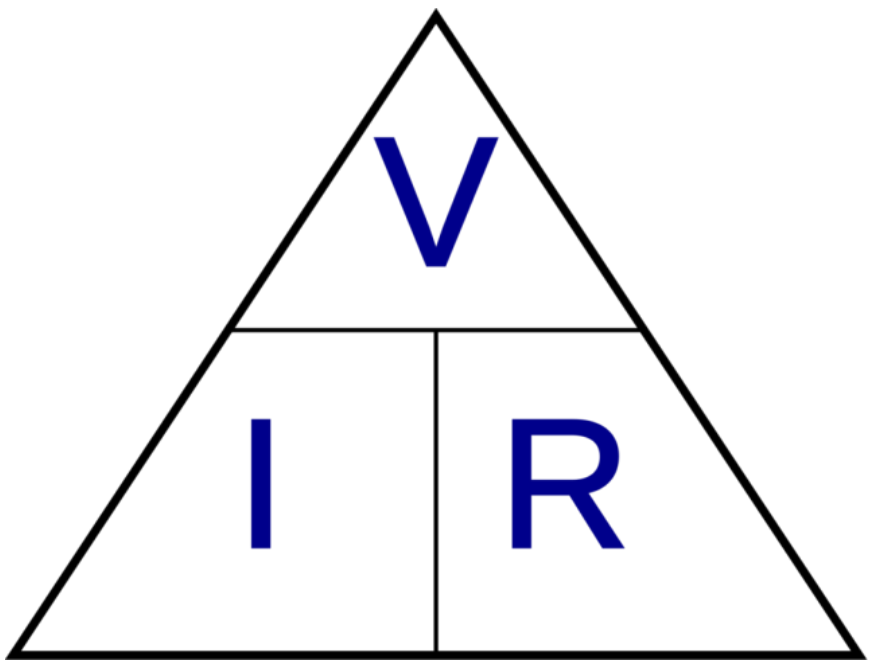

Voltaje, resistencia y corriente
Voltaje, resistencia y corriente son tres conceptos fundamentales en el estudio de la electricidad y
el electromagnetismo. A continuación, se presenta un resumen extenso de cada uno de ellos:
Voltaje (Tensión Eléctrica):
El voltaje, también conocido como tensión eléctrica o diferencia de potencial, es una magnitud que
mide la diferencia de energía potencial eléctrica entre dos puntos de un circuito eléctrico. Se mide
en voltios (V) y se representa mediante el símbolo V.
Características:
- Representa la fuerza que empuja a los electrones a moverse a través de un circuito.
- Cuanto mayor sea el voltaje, mayor será la fuerza que impulsa a los electrones.
-
Puede ser generado por diferentes fuentes, como baterías, generadores eléctricos o fuentes de
alimentación.
- Es una magnitud escalar, lo que significa que sólo tiene magnitud y no dirección.
Información relevante:
- El voltaje es el causante del flujo de corriente eléctrica en un circuito.
- Un voltaje constante produce una corriente constante en un circuito resistivo.
- El voltaje se puede sumar o restar en circuitos en serie o paralelo, respectivamente.
-
El voltaje también se puede expresar como el trabajo necesario para mover una carga eléctrica a
través de un circuito.
Resistencia Eléctrica:
La resistencia eléctrica es una medida de la oposición al flujo de corriente eléctrica en un
material conductor o en un circuito eléctrico. Se mide en ohmios (Ω) y se representa mediante el
símbolo R.
Características:
-
Depende del material, la longitud, el área de la sección transversal y la temperatura del
conductor.
-
Los materiales con alta resistencia se denominan "resistores" y se utilizan para controlar la
corriente en los circuitos.
-
Los materiales con baja resistencia se denominan "conductores" y se utilizan para transportar la
corriente eléctrica.
- Es una magnitud escalar, lo que significa que sólo tiene magnitud y no dirección.
Información relevante:
-
La resistencia es inversamente proporcional al área de la sección transversal del conductor.
- La resistencia es directamente proporcional a la longitud del conductor.
-
Cuanto mayor sea la resistencia, menor será la corriente que fluye a través del circuito para un
voltaje dado.
-
La resistencia se puede calcular utilizando la Ley de Ohm, que relaciona el voltaje, la
corriente y la resistencia.
Corriente Eléctrica:
La corriente eléctrica es el flujo de carga eléctrica, generalmente electrones, a través de un
material conductor o un circuito eléctrico. Se mide en amperios (A) y se representa mediante el
símbolo I.
Características:
- Representa la tasa de flujo de carga eléctrica por unidad de tiempo.
- Cuanto mayor sea la corriente, mayor será el flujo de electrones.
- Puede ser continua (DC) o alterna (AC).
- Es una magnitud escalar, lo que significa que sólo tiene magnitud y no dirección.
Información relevante:
-
La corriente eléctrica es generada por una fuente de voltaje y fluye a través de un circuito
cerrado.
- La corriente eléctrica se opone a la resistencia del material conductor o circuito..
-
Cuanto mayor sea el voltaje aplicado y menor sea la resistencia, mayor será la corriente que
fluye.
-
LCuanto mayor sea el voltaje aplicado y menor sea la resistencia, mayor será la corriente que
fluye.
Estos tres conceptos están estrechamente relacionados y son fundamentales para comprender el
funcionamiento de los circuitos eléctricos y electrónicos. La relación entre ellos se describe
mediante la Ley de Ohm, que establece que el voltaje (V) es igual al producto de la corriente (I) y la
resistencia (R), expresada como V = I × R.
